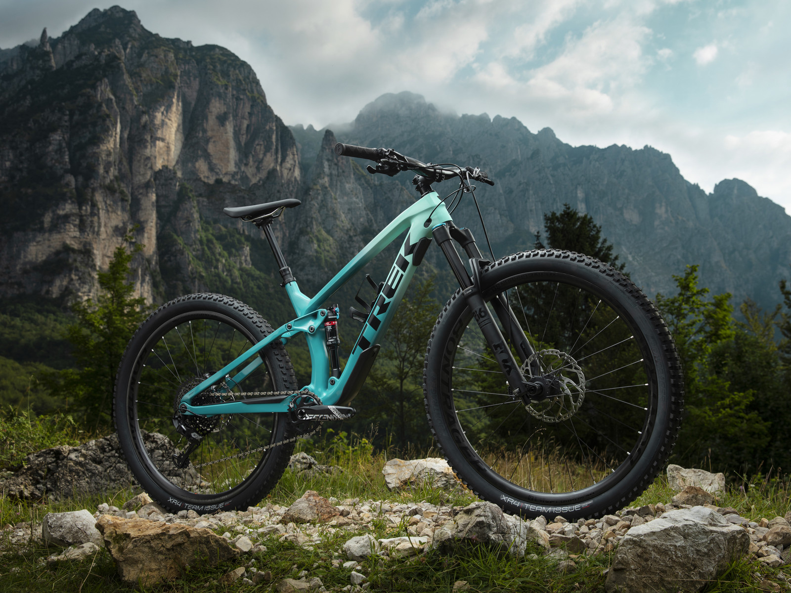
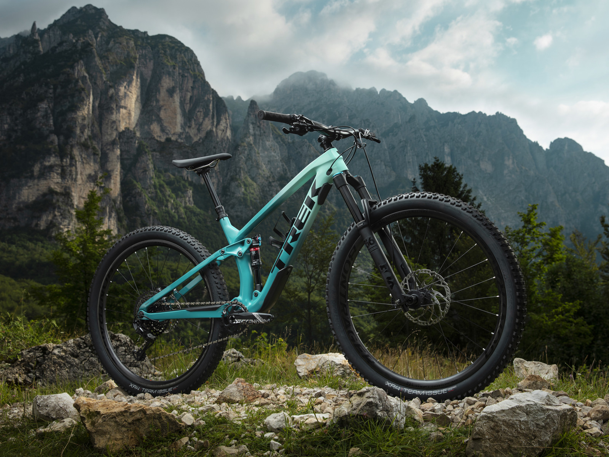
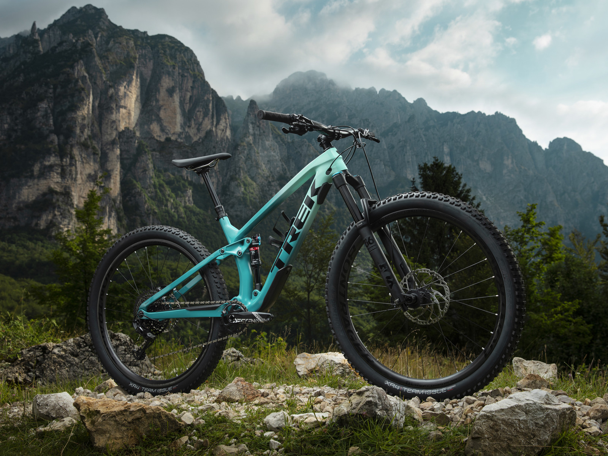

ESTA ES TU PAGINA PARA TENER TU TREK AL MEJOR PRECIO

La Marlin 4 es la bicicleta ideal para iniciarse en los senderos. Es perfecta para los ciclistas que quieren iniciarse en el mountain bike y que buscan una bicicleta equipada con cubiertas taqueadas que, además, les permita desplazarse por la ciudad. Los frenos de disco, la suspensión delantera, el cambio de 21 velocidades y los soportes para portabultos y guardabarros hacen que esta bicicleta sea ideal tanto para los ciclistas que se inician en los senderos como para aquellos que van en bici a la universidad.. Colores disponibles: Matte Trek Black - Matte Anthracite - Voodoo Aloha Green Es ideal para ti si... Buscas tu primera bicicleta de montaña a un precio asequible, pero también quieres usarla para ir en bicicleta a clase y poder subir por los bordillos. .
Ver mas
La Marlin 5 es una bicicleta preparada para trail, ideal para las aventuras del día a día, ya sea por senderos o fuera de ellos. La horquilla de suspensión, la transmisión 2x8 y los soportes para el portabultos y la pata de cabra la convierten en la elección ideal para los ciclistas que se inician en el trail o para aquellos que buscan una bicicleta cómoda y estable para moverse por la ciudad con la robustez de una auténtica bicicleta de montaña. Colores disponibles: Volt to Miami Green Fade - Lithium Grey - Radioactive Red
Ver más
La Fuel EX 7 destaca en los descensos más complicados donde el amortiguador trasero de última generación con 130 mm de recorrido y el delantero de 140 mm se hacen notar. El robusto cuadro de aluminio, las ruedas Tubeless Ready y la transmisión fiable SRAM NX Eagle 1x12 la convierten en una increíble bicicleta de montaña de doble suspensión para todo tipo de terrenos. Colores disponibles: Dark Prismatic Es ideal para ti si... Buscas una única bicicleta con la que poder disfrutar en cualquier sendero con componentes mejorados como una horquilla más suave con DebonAir y cubiertas completamente tubeless para una mayor ligereza y tracción.
Ver más
La Top Fuel 7 es una bicicleta de montaña de doble suspensión que combina la velocidad de una bicicleta de cross country con la diversión de una bicicleta de trail. Es eficiente en las subidas y rápida en los esprints, pero no le asustan los retos. Colores disponibles: Matte OliveGrey Es ideal para ti si...
Ver másLa Fuel EX 5 es una bicicleta de trail de alto rendimiento, con doble suspensión preparada para dominar los senderos. Con transmisión Shimano 1x12, tija telescópica para poder bajar el asiento en los descensos y con frenos a disco hidráulicos Colores disponibles: Lithium Grey/Marigold
Ver más
La Procaliber 9.8 es la campeona de la familia. Es una rígida de cross country diseñada para los ciclistas que compiten para ganar, con un cuadro de carbono con IsoSpeed que absorbe los baches de los senderos sin sacrificar la eficiencia, una horquilla ligera FOX que rinde al máximo en los descensos técnicos y una transmisión Shimano XT suave. Colores disponibles: Radioactive Red to Cobra Blood Fade - Dark Prismatic/Trek Black Es ideal para ti si....